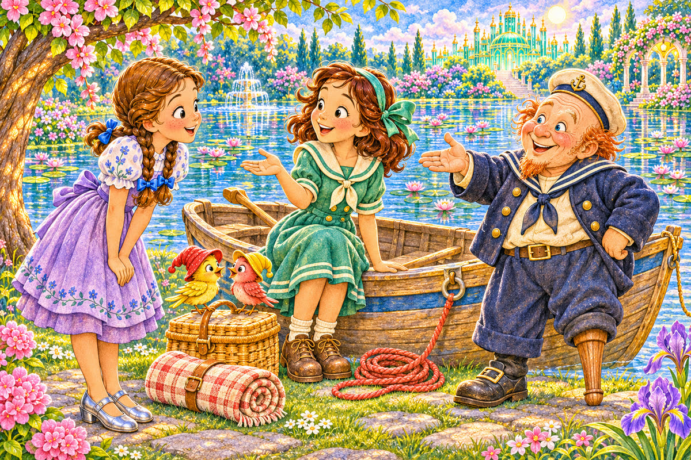
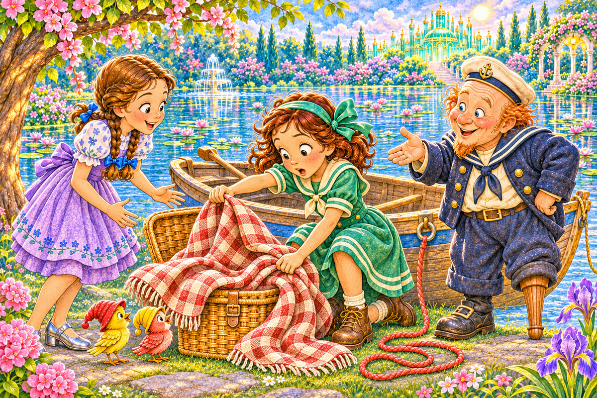
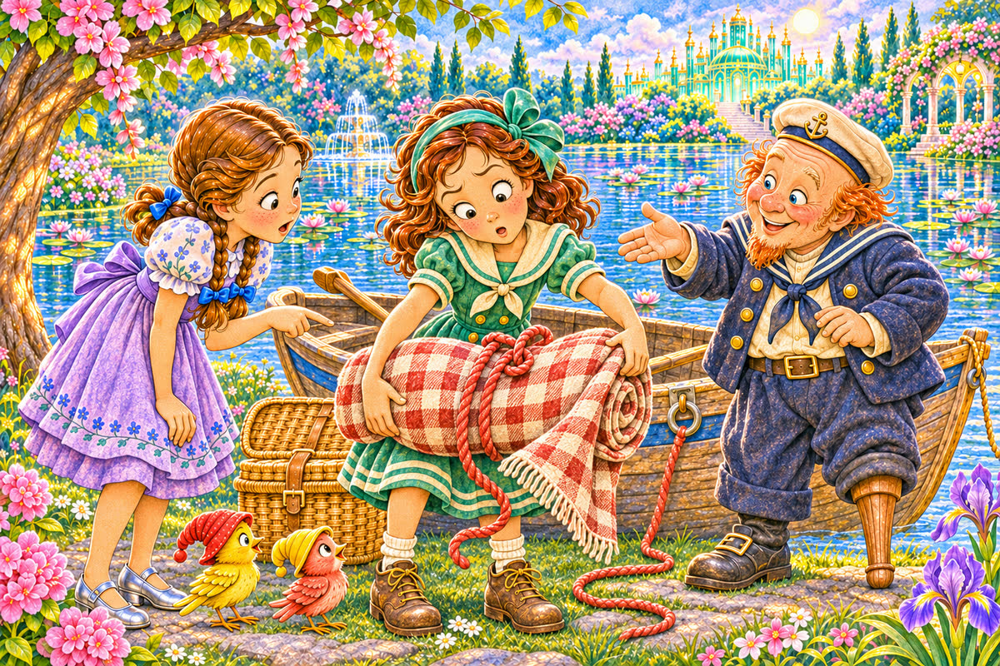
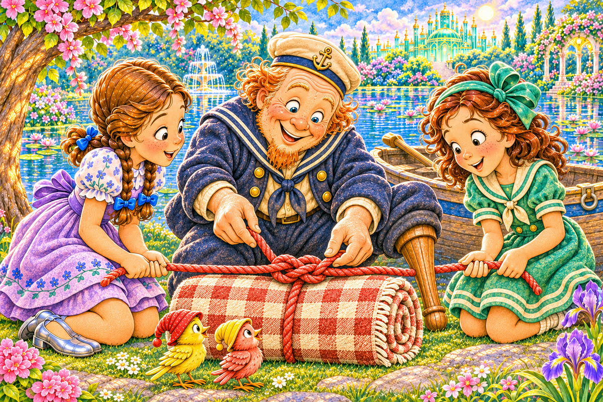
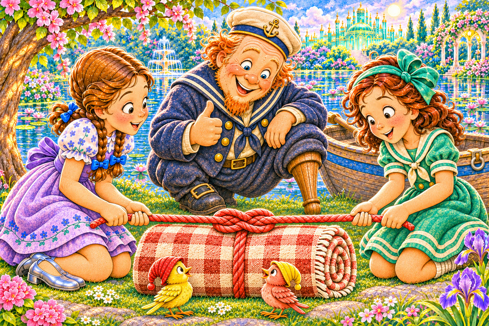
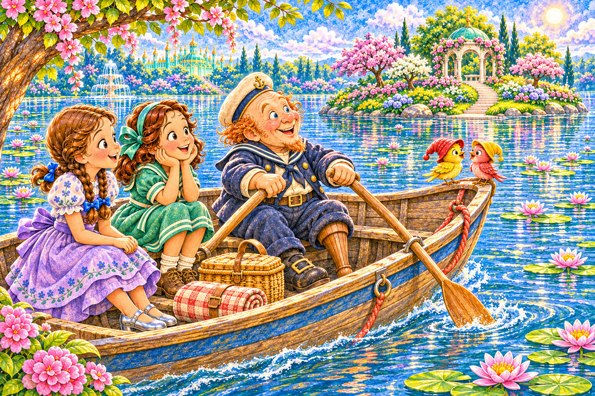
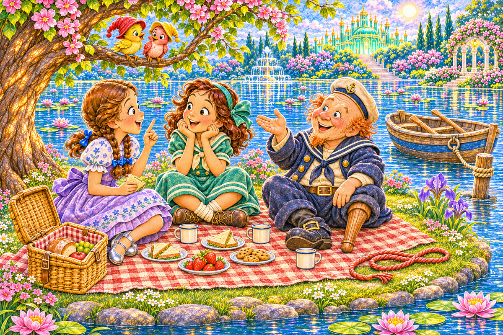

Pahina 1
Nagsuot si Dorothy ng bagong lilang damit.
Kasama ang dalawang ibon, naglakad siya sa Lawa ng mga Liryo.
Isang munting kuwento sa Lupain ng Oz
Tatlong bagong pahina muna kung gusto mo. Pagkatapos, puwedeng ang mga kard ang pumili ng mga paboritong pahina.

Nagsuot si Dorothy ng bagong lilang damit.
Kasama ang dalawang ibon, naglakad siya sa Lawa ng mga Liryo.
Doon nakilala niya si Trot, isang batang kasing-edad niya, at si Captain Bill, isang mandaragat na may kahoy na binti.
May bangka sila.

Magpipiknik sila sa munting pulo.
Inilagay ni Trot sa bangka ang basket at nakarolyong kumot.
Ngunit bumuka ang kumot at natakpan ang basket.

Binalot ni Trot ng pulang lubid ang kumot.
Dalawang beses niyang pinagkrus ang kanan sa kaliwa.
Pagbuhat niya, pumilipit ang buhol at kumalas.

“May maayos na paraan,” sabi ni Captain Bill.
“Ang parisukat na buhol ay patag at matibay na panali sa balutan.”
Hinawakan ni Trot ang dalawang dulo.
Inilagay niya ang kanan sa ibabaw ng kaliwa.
Pagkatapos, ipinailalim niya iyon at hinila.
“Baligtarin natin,” sabi ni Dorothy.
Inilagay niya ang kaliwa sa ibabaw ng kanan.
Ipinailalim niya iyon at hinila nang mahigpit.

Naging patag ang buhol.
Hinila ng mga bata ang magkabilang dulo.
Hindi pumilipit o kumalas ang buhol.
Nakatali nang maayos ang kumot.
“Para sa balutan ang buhol na ito,” sabi ni Captain Bill.
“Huwag gamitin ito para itali o buhatin ang isang tao.”

Inilagay nila sa bangka ang balutan at basket.
Sumakay ang mga bata.
Sumagwan si Captain Bill habang dumapo ang magkaibigang ibon sa unahan ng bangka.
Pagdating sa pulo, kinalag ni Trot ang buhol.
Lumuwag ito.
Inilatag nina Dorothy at Trot ang kumot sa ilalim ng namumulaklak na puno.

Kumain sila sa tabi ng lawa.
Nagkuwento si Captain Bill tungkol sa dagat.
Nagplano sina Dorothy at Trot ng susunod nilang pakikipagsapalaran habang nakikinig ang mga ibon.
Kung gusto ninyong mag-usap